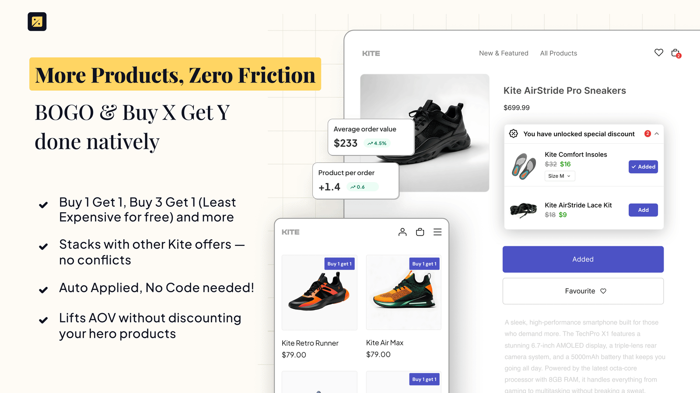
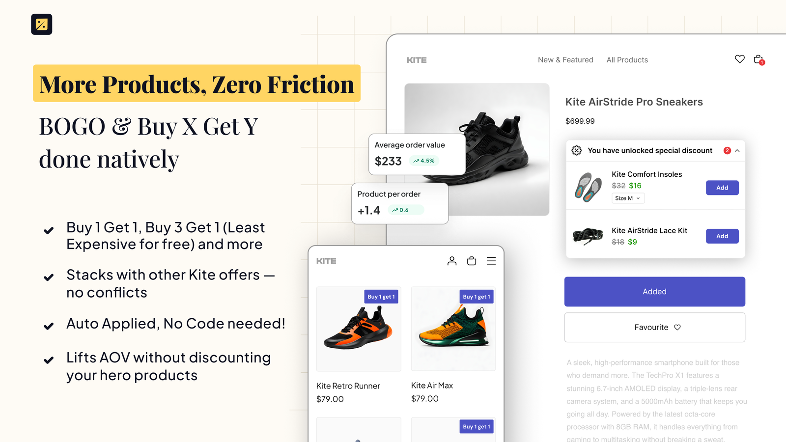

Kite listing image 5, animated
Open this file locally. Every image below is a file in output/; if it moves here, it moves in a browser.


Open this file locally. Every image below is a file in output/; if it moves here, it moves in a browser.

